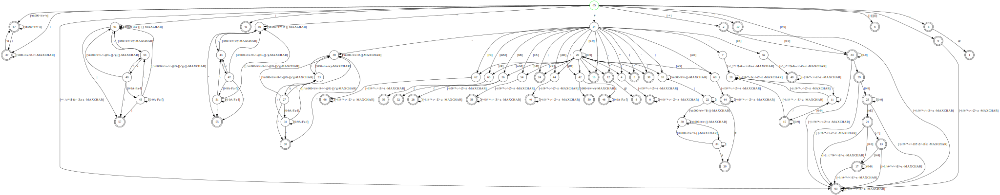

Quick Erlang
1 INSTALL
- install rebar3 from the website as a binary and throw it in your /usr/local/bin/rebar3
- install erlang using kerl, follow the instructions
- modify your .zshrc or .bashrc to activate the current version each shell startup
1.1 erlang install
cat ~/.zshrc
#. /usr/local/lib/erlang/27.1/activate
# remove the line above from zshrc
whereis erl
#erl: /usr/local/lib/erlang/27.1/bin/erl
whereis lfe
#lfe: /usr/local/bin/lfe /usr/local/lib/lfe
rm -rf /usr/local/lib/erlang
rm -rf /usr/local/bin/lfe
rm -rf /usr/local/lib/lfe
cd /usr/local/lib
sudo mkdir erlang
sudo chmod 777 erlang
cd erlang
kerl build 27.1
kerl install 27.1 /usr/local/lib/erlang
# Installing Erlang/OTP 27.1 (27.1) in /usr/local/lib/erlang...
# Initializing (install) log file at /home/debian/.kerl/builds/27.1/otp_install_27.1.log.
# You can activate this installation running the following command:
# . /usr/local/lib/erlang/activate
# Later on, you can leave the installation typing:
# kerl_deactivate
nano ~/.zshrc
#. /usr/local/lib/erlang/activate
kerl list releases
APPLICATIONS DISABLED (See: /home/debian/.kerl/builds/27.1/otp_build_27.1.log)
* jinterface : No Java compiler found
* odbc : ODBC library - link check failed
APPLICATIONS INFORMATION (See: /home/debian/.kerl/builds/27.1/otp_build_27.1.log)
* wx : wxWidgets was not compiled with --enable-webview or wxWebView developer package is not installed, wxWebView will NOT be availablelsb_release -a
# search libwxgtk-webview
sudo apt install libwxgtk-webview3.0-gtk3-dev
``
in a headless remote server
```bash
sudo apt-get install xvfb
Xvfb :1 -screen 0 1024x768x24 &
export DISPLAY=:1
in erlang
os:putenv("DISPLAY", ":1").
wx:new().git clone https://github.com/lfe/lfe.git
cd lfe
make compile
make install PREFIX=$HOME/.local2 Variables vs Atoms
- Variables are upper-case
- Atoms are lower-case
- Atoms are like Enums, and not really used that frequently
- An atom is enclosed in single quotes (’) if it does not begin with a lower-case letter
thisisanAtom.
'Another atom'
ThisisanVariable = 5.
SomeVariable = someatom.3 quick run down
%% @author me
%% @doc super
%% @reference me
%% hihi
%% @copyright 2016
%% @version 1
-module(main).
-compile(export_all).
-record(myProductType, {name, age, friends=[]}).
% -export([Function1/Arity, Function2/Arity, ..., FunctionN/Arity]).
%elixir allows overloading of function by arity. There is no overloading by types.
% This is why you can export the same function of different arities.
%'edoc:files(["main.erl"],[{dir,"doc"}]).'
% Caplocks matter in erlang. Caplocks for variable/parameter names. Non-caplocks from atoms
% In some ways, we can treat lowercase names like strings(really theyre atoms) and Uppercase as variables.
%% @doc migaew
-spec moob(atom()) -> integer().
moob(MyVar) ->
MyOutput = if MyVar == atomA -> 1;
MyVar == atomB -> 2;
true -> -999
end,
{MyOutput}.
% excute with `c(main)` then `main:hello()` or `main:last
% Basics
% modulo or `%`
%% @doc last element of list built with yes
%% hi.
last([x | []]) -> x;
last([x | xs]) -> last(xs).
% 2nd to last element of list
% sndlast([x , y | []]) -> y;
% sndlast([x | y, xs]) -> y.
absVal_Guard(Num) when Num < 0 -> -Num;
absVal_Guard(Num) when Num == 0 -> 0;
absVal_Guard(Num) when Num > 0 -> Num.
hello() -> io:format("hello world~n").
mylambda = fun(X) -> X + 1 end.
equalityTest() ->
TestA = 5=:=5, %equality
PairX = {3,5}, %tuples use braces
{LeftX,RightX} = PairX, %destructuring
io:format("hi ~p ~p\n",[LeftX,RightX]),
io:format("TestA: ~p\n",[TestA]),
MyList = [2,3,4], %lists like python
io:format("MyList: ~p\n",[MyList]),
MyList2 = [1 | MyList],
io:format("MyList2: ~p\n",[MyList2]),
MyList3 = [1 | [2,3,4]],
io:format("MyList3: ~p\n",[MyList3]),
io:format("[1 | MyList] == [1 | [2,3,4]] : ~p\n",[MyList2 == MyList3]),
MyList4 = [1 | [2 | [3 | [4 | []]]]],
io:format("MyList4: ~p\n",[MyList4]),
io:format("[1 | MyList] == [1] ++ MyList : ~p\n",[[1 | MyList] == [1] ++ MyList]),
MapRes1 = [X*2 || X <- [1,2,3,4]],
io:format("Map AKA Set Comprehension {X*2 | X ∈ {1,2,3,4}} is: ~p\n",[MapRes1]),
FilterRes1 = [ X || X <- [1,2,3,4], X rem 2 == 0],
io:format("Filter AKA Set Comprehension {X ∈ {1,2,3,4} | X % 2==0} is: ~p\n",[FilterRes1]),
CombinationSum = [X+Y || X <- [1,2], Y <- [9,10]],
io:format("{X+Y|X∈ {1,2},Y∈ {9,10}} == {1+9,1+10,2+9,2+10} ~p\n",[CombinationSum]),
{PairX}.4 List
- Erlang
|is Haskell’sCons - Erlang
[1 | [2 | [3 | [4 | []]]]]is (Cons 1 (Cons 2 (Cons 3 (Cons 4 Nil)))
5 Datatypes
is_atom/1
is_binary/1
is_bitstring/1
is_boolean/1
is_builtin/3
is_float/1
is_function/1
is_function/2
is_integer/1
is_list/1
is_number/1
is_pid/1
is_port/1
is_record/2
is_record/3
is_reference/1
is_tuple/1 
6 lf
6.1 Ex Cowboy setup
rebar3 new lfe-app thecowboyex- in rebar.config add
{cowboy, "~> 2.12.0"}todeps
- in .app.src add
cowboytoapplications, {[...
add the below to thecowboyex-app.lfe
(defun start (_Type _Args)
(application:ensure_all_started 'cowboy)
(let* ([Dispatch (cowboy_router:compile (list (tuple '_ (list (tuple "/" 'hello_handler '())))))]
[(tuple 'ok _) (cowboy:start_clear 'my_http_listener
(list (tuple 'port 8081))
(map 'env (map 'dispatch Dispatch)) )]
)
(thecowboyex-sup:start_link)
)
)make a new file hello_handler.lfe
(defmodule hello_handler
;; Cowboy handler
(export (init 2)
(terminate 2)
))
;;;===================================================================
;;; Cowboy handler
;;;===================================================================
(defun init (req0 state)
(let ((req (cowboy_req:reply 200 #M(#"content-type" #"text/javascript")
(binary """
<h1>Hello</h1>
<p>Go yourself</p>
""")
req0)))
(tuple 'ok req state)
))
(defun terminate (_req _state) 'ok)rebar3 lfe repl
(thecowboyex-app:start 'normal '())6.2 Example cowboy
{erl_opts, [debug_info]}.
{provider_hooks, [{pre, [{compile, {lfe, compile}}]}]}.
{deps, [
{lfe, "~> 2.1"},
{ltest, "~> 0.13"},
{cowboy, "~> 2.12.0"}
]}.
{plugins, [
{rebar3_lfe, "~> 0.4.11"}
]}.
{shell, [
%% {config, "config/sys.config"},
{apps, [thecowboyex]}
]}.{application, thecowboyex, [
{description, "An OTP application"},
{vsn, "0.1.0"},
{registered, [thecowboyex]},
{mod, {thecowboyex_app, []}},
{applications, [
kernel,
stdlib,
cowboy
]},
{env, []},
{modules, []},
{licenses, ["Apache-2.0"]},
{links, []}
]}.(defmodule thecowboyex_app
(behaviour application)
;; app implementation
(export
(start 2)
(stop 1)))
;;; --------------------------
;;; application implementation
;;; --------------------------
(defun start (_Type _Args)
(application:ensure_all_started 'cowboy)
(let* ([Dispatch (cowboy_router:compile (list (tuple '_ (list (tuple "/" 'hello_handler '())))))]
[(tuple 'ok _) (cowboy:start_clear 'my_http_listener
(list (tuple 'port 8080))
(map 'env (map 'dispatch Dispatch)) )]
)
(thecowboyex_sup:start_link)
)
)
(defun stop (_state)
(my-lfe-app-sup:stop)
'ok)(defmodule hello_handler
;; Cowboy handler
(export (init 2)
(terminate 2)
))
;;;===================================================================
;;; Cowboy handler
;;;===================================================================
(defun init (req0 state)
(let ((req (cowboy_req:reply 200 #M(#"content-type" #"text/javascript")
(binary """
<h1>Hello</h1>
<p>Go yourself</p>
""")
req0)))
(tuple 'ok req state)
))
(defun terminate (_req _state) 'ok)6.3 Setup New
- make the file
~/.config/rebar3/rebar.config
{erl_opts, [debug_info]}.
{deps, []}.
{plugins, [
{rebar3_lfe, "0.4.10"}
]}.
{shell, [
%% {config, "config/sys.config"},
% {apps, [my_lfe_app]}
]}.rebar3 plugins updaterebar3 new lfe-app my_lfe_app
# or
rebar3 new lfe-lib my_lfe_librarycd my_lfe_app
rebar3 compile
rebar3 lfe repl6.4 Setup Old
rebar3 new release mycowboyapp
cd mycowboyapp
nano rebar.config
rebar3 compileadd the below two to your rebar.config
{deps, [
{cowboy, {git, "https://github.com/ninenines/cowboy", {tag, "2.12.0"}}}
]}.
{plugins, [
{rebar3_lfe, "0.4.9"}
]}.{erl_opts, [debug_info]}.
{deps, [
{cowboy, {git, "https://github.com/ninenines/cowboy", {tag, "2.12.0"}}}
]}.
{plugins, [
{rebar3_lfe, "0.4.9"}
]}.
{relx, [
{release, {cowboyex, "0.1.0"}, [
cowboyex,
sasl
]},
{mode, dev},
%% automatically picked up if the files
%% exist but can be set manually, which
%% is required if the names aren't exactly
%% sys.config and vm.args
{sys_config, "./config/sys.config"},
{vm_args, "./config/vm.args"}
%% the .src form of the configuration files do
%% not require setting RELX_REPLACE_OS_VARS
%% {sys_config_src, "./config/sys.config.src"},
%% {vm_args_src, "./config/vm.args.src"}
]}.
{profiles, [
%% prod is the default mode when prod
%% profile is used, so does not have
%% to be explicitly included like this
{prod, [
{relx, [
{mode, prod}
%% use minimal mode to exclude ERTS
%% {mode, minimal}
]}
]}
]}.6.5 Examples
;; Start the TCP server
(defmodule sample
(export all)
)
(defun start (Port)
(let (((tuple ok ListenSocket) (gen_tcp:listen Port '(binary #(packet 0) #(active false) #(reuseaddr true))) ))
(io:format "listening on port ~p ~n" `(,Port))
(loop ListenSocket)
)
)
(defun loop (ListenSocket)
(let ((
(tuple ok Socket ) (gen_tcp:accept ListenSocket)
))
(spawn (lambda () (handle-connection Socket)))
(loop ListenSocket)
)
)
(defun handle-connection (Socket)
(case (gen_tcp:recv Socket 0)
((tuple ok Data)
(io:format `(,Data))
(gen_tcp:send Socket "Hi this is Http 0.9")
(gen_tcp:close Socket)
)
((tuple error Reason)
(io:format `(,Reason))
(gen_tcp:close Socket)
)
)
)
6.6 Spawn and lambdas
- BE CAREFUL: Spawning a lambda
spawn(fun() -> self() ! {done} end).
(spawn (lambda () (! (self) (tuple "done"))))The 2 lines above will not work as expected. (self) does NOT result in the current parent pid but the spawned lambda Pid.
You must use the other spawn version that passes in the function as a string and function args as a list.
spawn(sample7, loop, [{done}])7 etc
(defmodule maths
(export (sum 2) (diff 2)))
(defun sum (a b) (+ a b))
(defun diff (a b) (- a b))(c "/path/to/maths.lfe")Just start the tracer:
(dbg:tracer)
#(ok <0.46.0>)Tell the tracer you are interested in all calls for all processes:
(dbg:p 'all 'c)
#(ok (#(matched nonode@nohost 26)))Finally, tell it you want to trace the function, sum, from the maths module:
(dbg:tpl 'maths 'sum [])
#(ok (#(matched nonode@nohost 1)))Now, try to call the function, as usual. The tracer is active!
(maths:sum 2 3)
5
(<0.29.0>) call maths:sum(2,3)To trace all functions from the maths module:
> (dbg:tpl 'maths [])To trace the return value for a given function:
(dbg:tpl 'maths 'sum (match-spec ([_] (return_trace))))
#(ok (#(matched nonode@nohost 1) #(saved 1)))
(maths:sum 19 23)
42
(<0.56.0>) call maths:sum(19,23)
(<0.56.0>) returned from maths:sum/2 -> 42To stop the trace:
(dbg:stop)
ok8 Making a release file
- erlang releases are not binaries; they are just packaged erlang with your application
- biggest reminder is that lfe needs to compile to erlang first then you have to put your release
.relconfigs into the built erlang directory - lfe has
src/hey.app.srcbut this will be compiled to the_builddirectory
{application, 'hey', [
{description, "An LFE application"},
{vsn, "1.0.0"},
{registered, []},
{mod, {'hey-app', []}}, %% Use 'hey-app' as specified
{applications, [
kernel,
stdlib
]},
{env, []},
{modules, ['hey-app']}, %% List the modules, also using 'hey-app'
{licenses, ["Apache 2.0"]},
{links, []}
]}.hey-app-rel.rel
{release, {"hey", "1.0.0"},
{erts, "15.1"},
[
{kernel, "10.1"},
{stdlib, "6.1"},
{hey, "1.0.0"} %% Ensure your app version matches the one specified in your app file
]
}.build-boot
#!/usr/bin/env escript
main(_) ->
systools:make_script("hey-app-rel", [local, no_dot_erlang, no_warn_sasl]).rebar3 compile
mv build-boot _build/default/lib/hey
mv hey-app-rel.rel _build/default/lib/hey
cd _build/default/lib/hey
ERL_LIBS=. ./build-bootthis creates a .boot file
to create the release.
make
#!/usr/bin/env escript
main(_) ->
systools:make_tar("hey-app-rel", [{erts, "/usr/local/lib/erlang/"}]).cd _build/default/lib/hey
ERL_LIBS=. ./build-releasethis creates a tar.gz archive which you can extract which has the condensed erlang with associated dependencies.
9 stdlib
9.1 json
iolist_to_binary(json:encode(#{foo => <<“bar”>>})).
(iolist_to_binary (json:encode (map ’foo #“bar”)))
9.2 ets
- ets is a fast kv store that is not durable(not written on disk)
- mnesia is a slower kv store that is durable(written on disk)
(ets:new ‘ingredients’(set named_table)) (ets:insert ’ingredients (tuple ’bacon ’great)) (ets:lookup ’ingredients ’bacon ) (ets:insert ’ingredients (list (tuple ’bacon ’great) (tuple ’cabbage ’alright))) (ets:lookup ’ingredients ’cabbage ) (ets:delete ’ingredients ’cabbage ) (ets:lookup ’ingredients ’cabbage )